ملابس الرجال:
من الملابس التقليدية للرجال:
- الثوب؛
- الكوفية أو الشماغ؛
- العباءة في بعض المناسبات.
٠١المملكة الأردنية الهاشمية
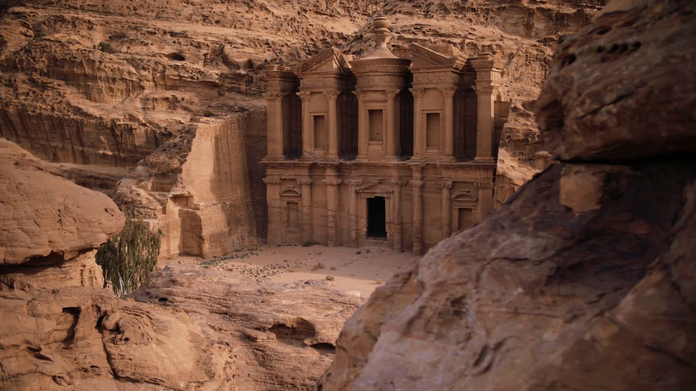
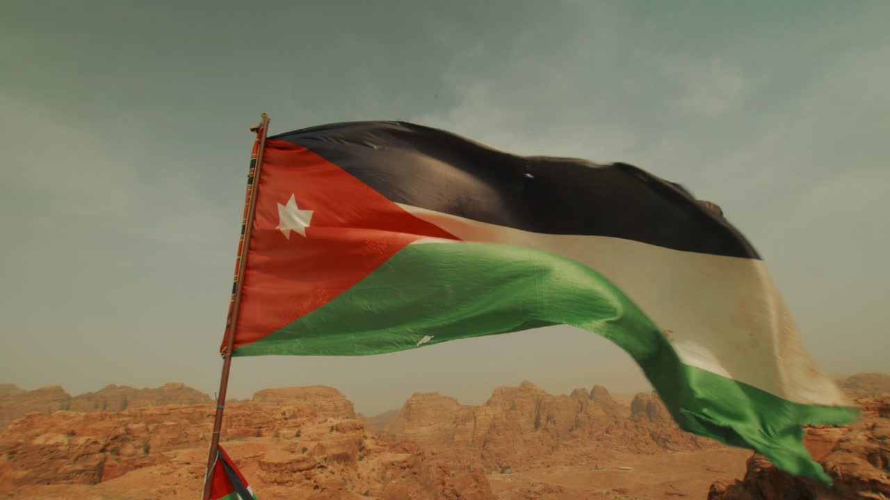
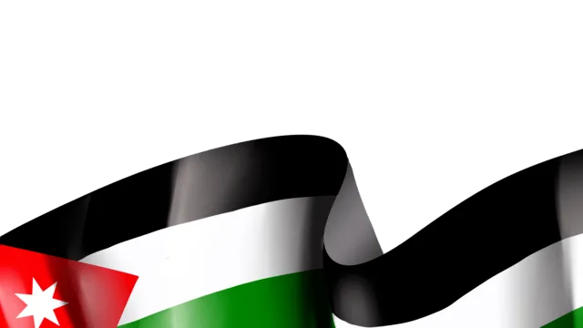
عَلَمُ الأُرْدُنِّ هُوَ العَلَمُ الرَّسْمِيُّ لِلْمَمْلَكَةِ الأُرْدُنِّيَّةِ الهَاشِمِيَّةِ، وَقَدْ بَدَأَ اسْتِخْدَامُهُ رَسْمِيًّا فِي السَّادِسِ عَشَرَ مِنْ أَبْرِيلَ عَامَ ١٩٢٨م.
وَفِي وَسَطِ المُثَلَّثِ الأَحْمَرِ تُوجَدُ نَجْمَةٌ بَيْضَاءُ ذَاتُ سَبْعَةِ رُؤُوسٍ، وَهِيَ تَرْمُزُ إِلَى آيَاتِ سُورَةِ الفَاتِحَةِ السَّبْعِ
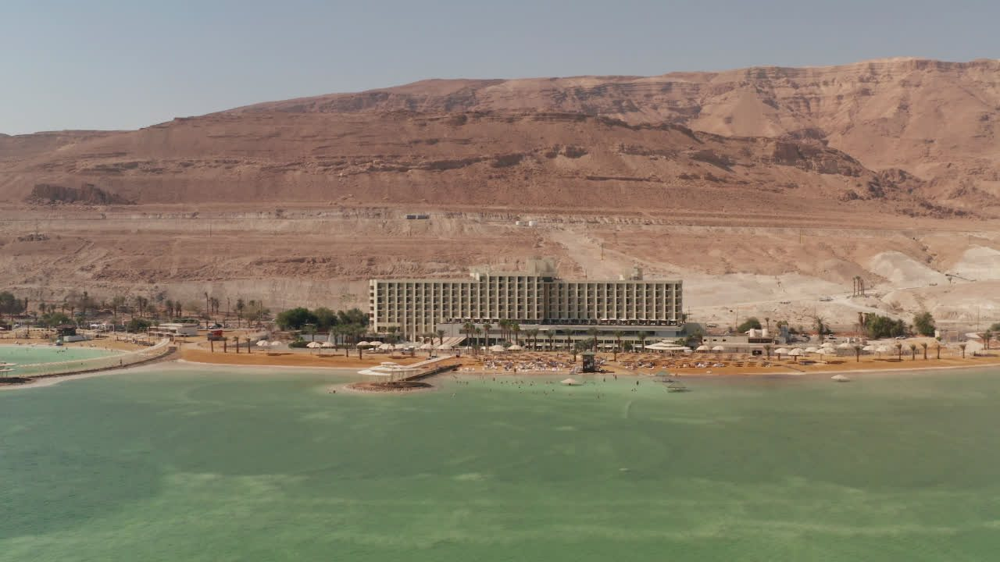
شِعَارُ المَمْلَكَةِ الأُرْدُنِّيَّةِ الهَاشِمِيَّةِ هُوَ رَمْزٌ رَسْمِيٌّ لِلدَّوْلَةِ، وَيَجْمَعُ عَدَدًا مِنَ العَنَاصِرِ الَّتِي تَعْبِّرُ عَنْ تَارِيخِ المَمْلَكَةِ وَهُوِيَّتِهَا.

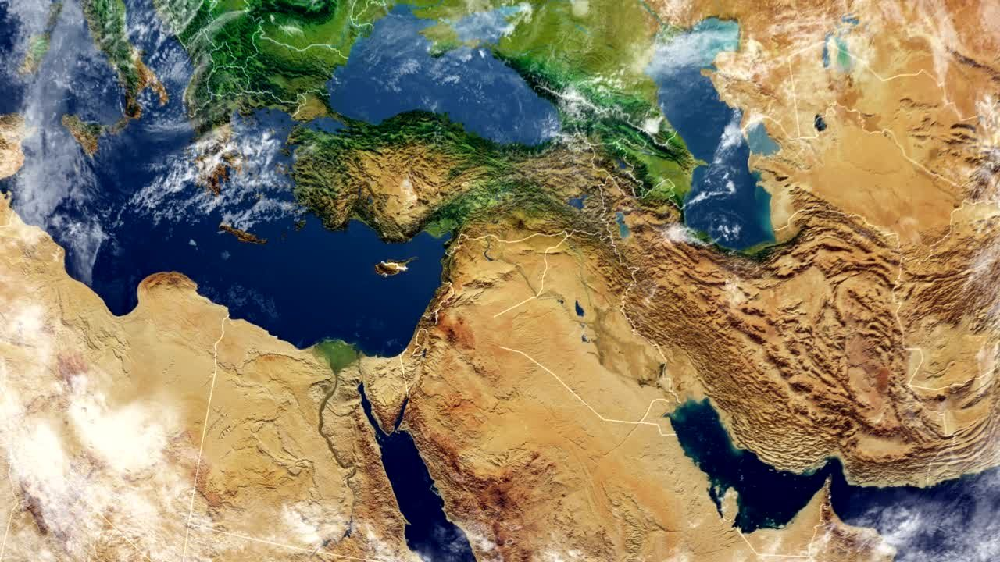
تقع المملكة الأردنية الهاشمية في غرب آسيا، في منطقة الشرق الأوسط.
وللأردن منفذ بحري صغير على البحر الأحمر عن طريق خليج العقبة.
يبلغ عدد سكان الأردن حوالي 11.9 مليون نسمة.
يشكّل العرب غالبية السكان، وتعيش في الأردن أيضًا مجموعات من الشركس والشيشان والأرمن وغيرهم.
ويتركز معظم السكان في المناطق الشمالية والوسطى من البلاد، وخاصة في عمّان والزرقاء وإربد.


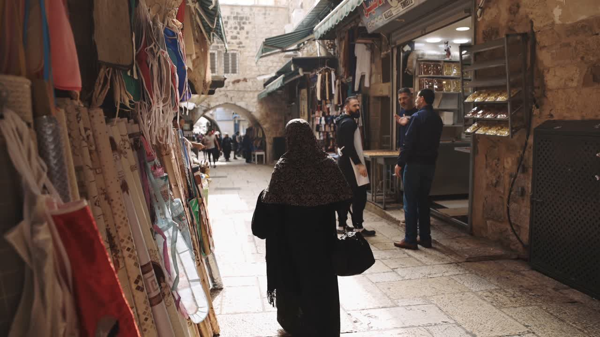
يُعَدُّ الأردن من دول الشرق الأوسط ذات الاقتصاد المتنوع.
بلغ الناتج المحلي الإجمالي للأردن حوالي 53.35 مليار دولار أمريكي في عام 2024.
ويؤدي قطاع السياحة دورًا مهمًا في الاقتصاد الأردني بسبب المواقع التاريخية والطبيعية المشهورة.
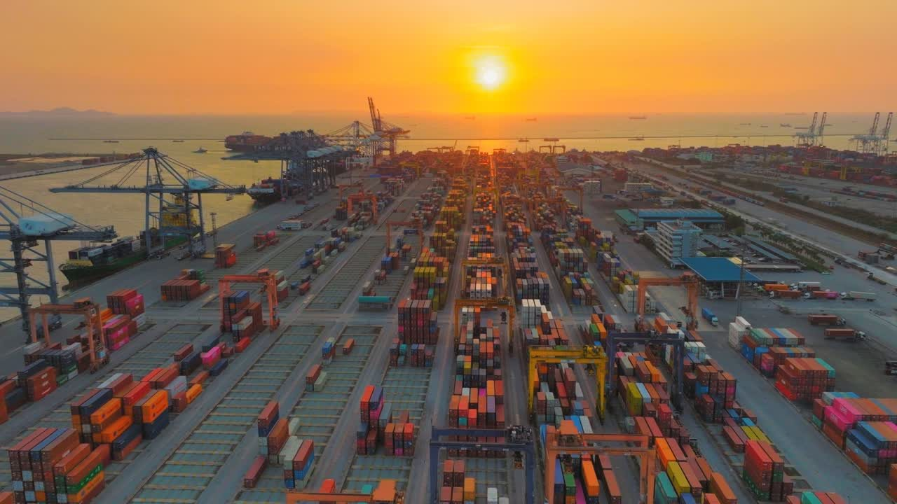
يستورد الأردن من الخارج أكثر مما يصدّر.
اللغة الرسمية في الأردن هي اللغة العربية.
وتُستخدم اللغة الإنجليزية أيضًا على نطاق واسع، وخاصة في التعليم والأعمال والتواصل الدولي.
اللهجة الشمالية، المنتشرة في مناطق مثل إربد وجرش وعجلون.
اللهجة الحضرية، وخاصة في عمّان والزرقاء.
اللهجات الجنوبية والبدوية، المنتشرة في المناطق الجنوبية والشرقية.
وتختلف اللهجات الأردنية في بعض الكلمات والنطق، لكنها تنتمي إلى مجموعة اللهجات العربية الشامية والبدوية.
تجمع الثقافة الأردنية بين التقاليد العربية والإسلامية والبدوية.
وتُعَدُّ الأسرة والضيافة من أهم القيم في المجتمع الأردني.
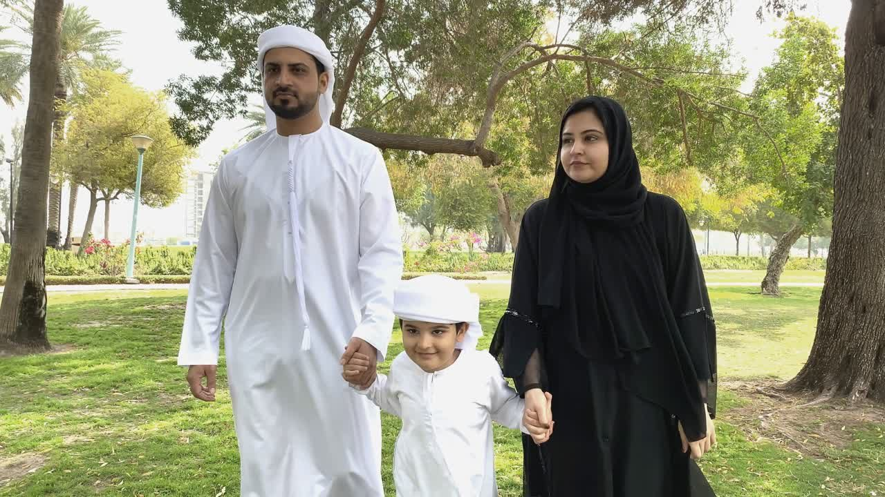
من الملابس التقليدية للرجال:
ترتدي النساء في بعض المناطق فساتين طويلة تقليدية مزينة بالتطريز.
ويُعَدُّ التطريز الأردني جزءًا مهمًا من التراث الثقافي للبلاد.

من أشهر الأطباق الأردنية المنسف.
يتكوّن المنسف عادةً من:
ويُقدَّم المنسف في المناسبات العائلية والأعياد وعند استقبال الضيوف.
ومن الأطعمة الشعبية الأخرى:
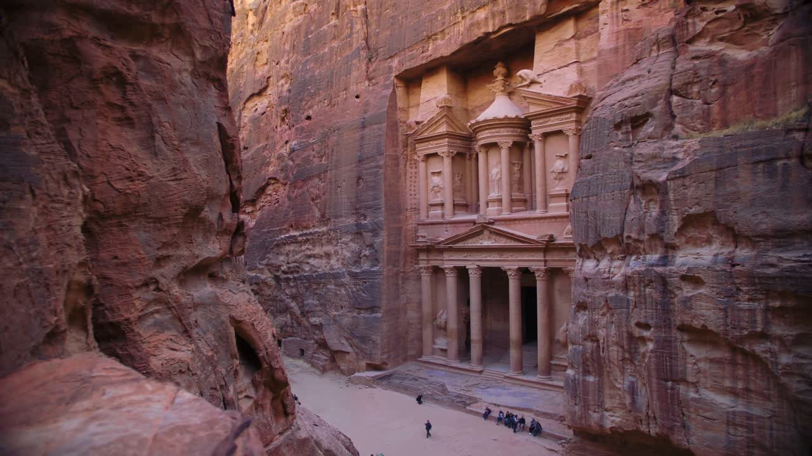
البتراء مدينة تاريخية قديمة بناها الأنباط، وهي من أشهر المعالم السياحية في الأردن، كما أنها مدرجة على قائمة التراث العالمي لليونسكو.
عمّان هي عاصمة الأردن وأكبر مدنه، وتجمع بين الحياة الحديثة والمواقع التاريخية، مثل قلعة عمّان والمدرج الروماني.
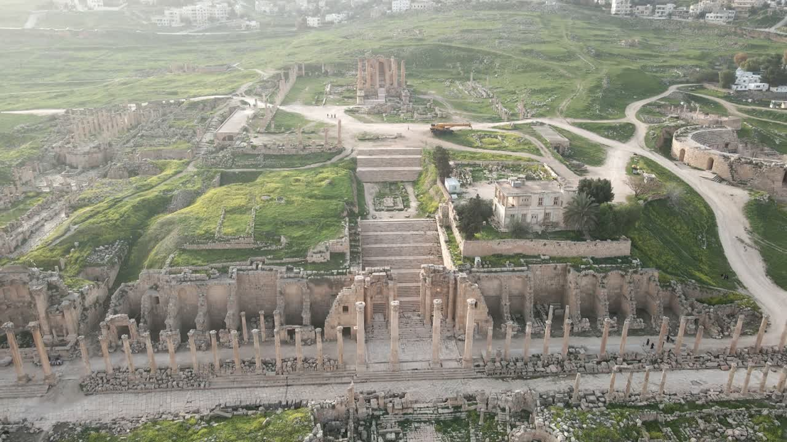
جرش مدينة تاريخية تشتهر بالآثار الرومانية، مثل الشوارع القديمة والأعمدة والمعابد والمسارح.
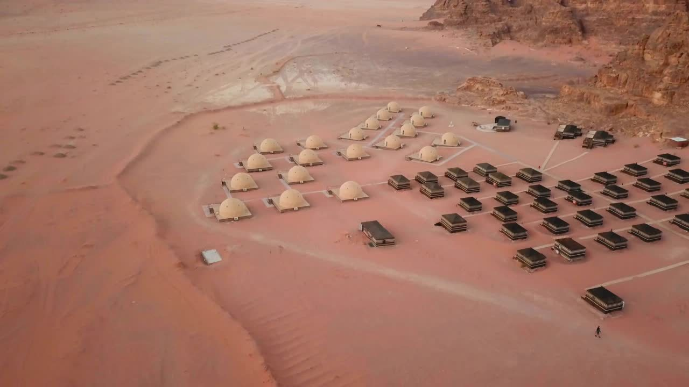
وادي رم منطقة صحراوية جميلة تشتهر بالجبال والصخور والمناظر الطبيعية، وتُعرف أيضًا باسم وادي القمر.
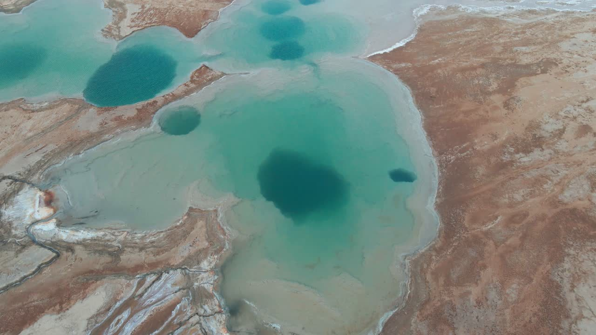
البحر الميت من أشهر المعالم الطبيعية في الأردن، ويقع في منطقة منخفضة جدًا من سطح الأرض.
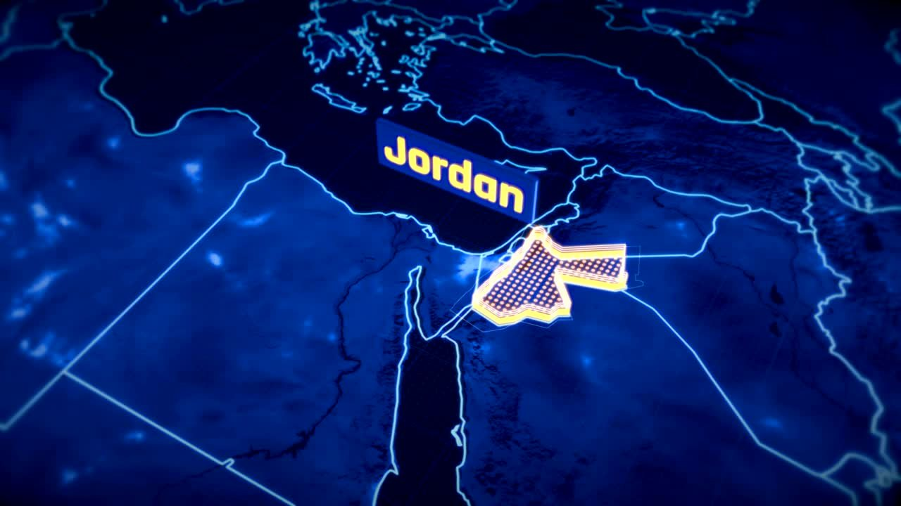
سُمِّيَ الأردن نسبةً إلى نهر الأردن.
تُعَدُّ البتراء من عجائب الدنيا السبع الجديدة.
تُعَدُّ البتراء ووادي رم من مواقع التراث العالمي لليونسكو.
للأردن منفذ بحري على البحر الأحمر من خلال مدينة العقبة.
تُعَدُّ جرش من أهم المدن الأثرية الرومانية المحفوظة في المنطقة.
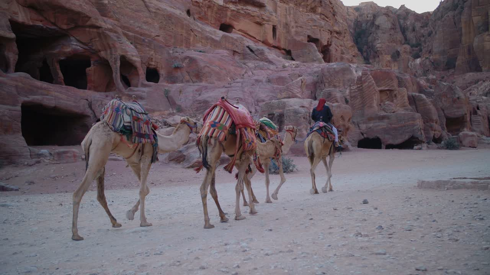